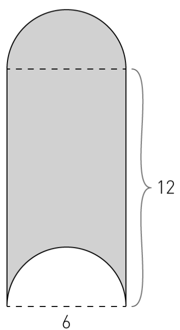
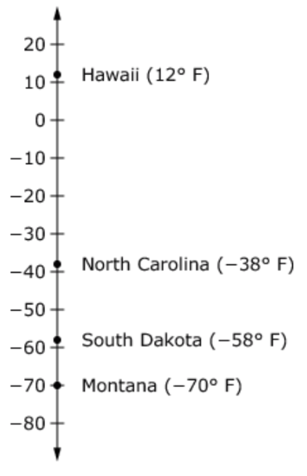
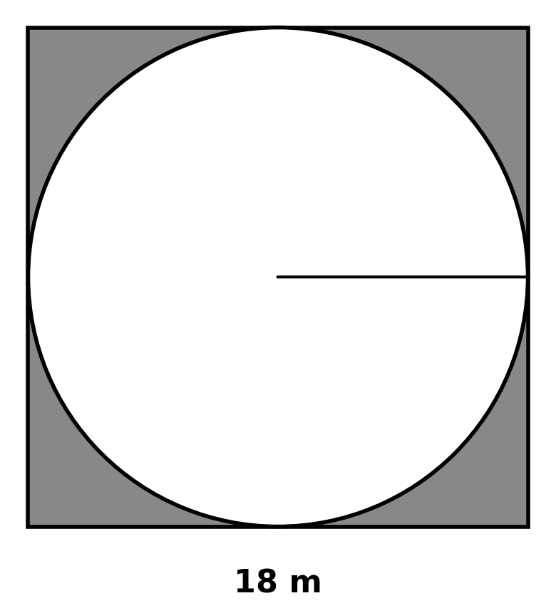
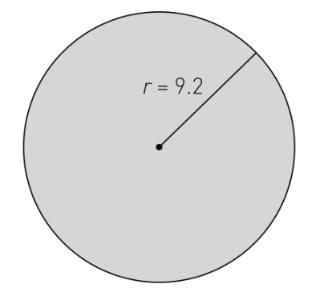
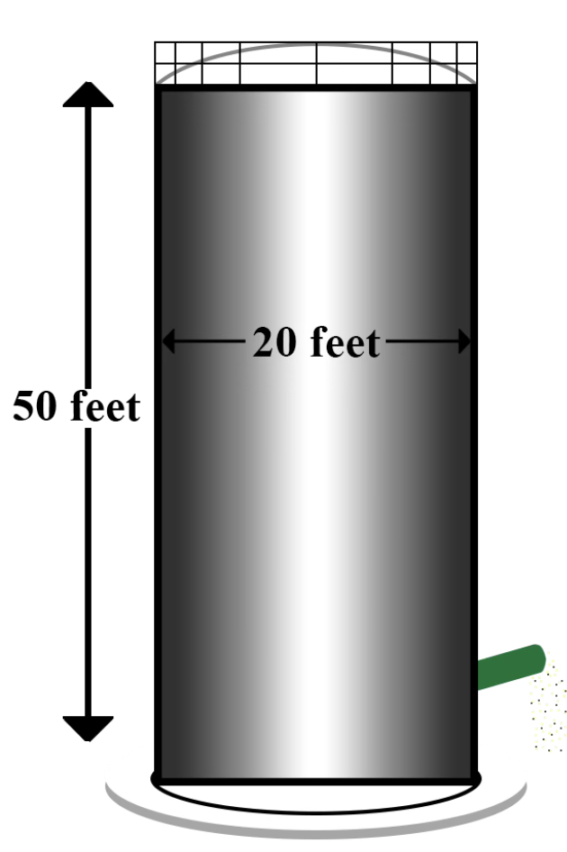

Solve. Show your work.
Tasha has eight more fish than Oscar, who has twice as many fish as Cecilia. If altogether they have 148 fish, how many fish do each of them have?
A candy store’s specialty is taffy. Customers can fill a bag with taffy and the price is based on how much the candy weighs. The store charges $2.00 for 10 ounces of taffy.
A. Complete the table.
| Amount of taffy (ounces) | 2 | 5 | 10 | 12 | 15 | 20 |
|---|---|---|---|---|---|---|
| Price ($) | $2.00 | $4.00 |
B. Graph the values from the table you completed above.
Calculate the area of the shaded portion of the shape below.
Solve.
Tina drove 108 miles and used 4.5 gallons of gasoline. Compute the unit rate.
If 17 oranges cost $3.23, compute the unit rate.
Last week, Marcy bought 2 pounds of pistachio nuts and paid $7.96. This week she bought only \( \frac{1}{2} \) of a pound and paid $1.99.
YES or NO: Is the relationship proportional? Show your work.
The number line shows record low temperatures for four states.
What is the difference, in degrees, between the record low temperatures in Hawaii and South Dakota?
Two employees of Frontier Fence Company can install 100 feet of fence in two days.
What is the unit rate for one employee?
What is the area of the shaded region within the square?
YES or NO: Do the values in the table represent a proportional relationship?
| x | 3 | 4 | 5 | 6 | 7 |
|---|---|---|---|---|---|
| y | 22 | 28 | 34 | 40 | 46 |
Find the probability of rolling a number less than five on a standard number cube.
Ted weighs 30 pounds. Royce weighs 3 pounds more than twice Ted’s weight. How much does Royce weigh?
Evaluate each expression using \( x = \frac{1}{2} \) and \( y = 3 \).
\( 6y^2 \qquad 4x + 5y \)
Greg has been buying apples for 69¢ each. Recently, a 5¢ bag fee was added. Write an equation representing this situation.
Calculate the circumference of the circle.
You have five blue candies, six green candies, nine yellow candies, and three red candies. What is the probability that the candy will be green?
Circle the table that does NOT represent a proportional relationship.
What is the volume of the cylindrical grain silo shown below? Round your answer to the nearest whole number.
Evaluate:
\( -\frac{3}{4} \div \frac{1}{2} \)
Evaluate:
\( 5\frac{1}{2} + (-3.25) \)
The length of a rectangular field is 7 meters less than four times its width. The perimeter is 136 meters. Find the length and width.